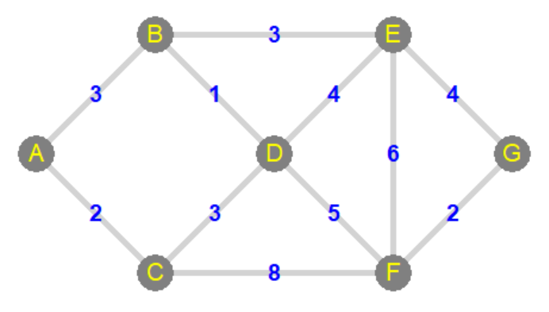
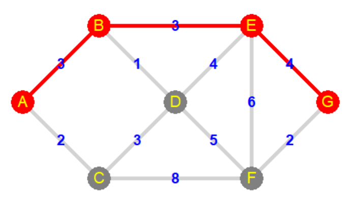
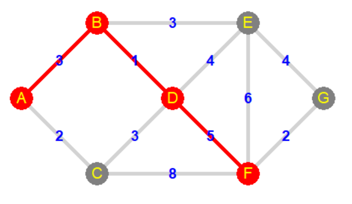
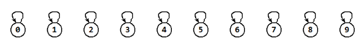
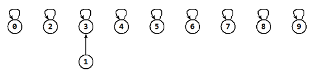
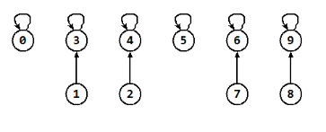
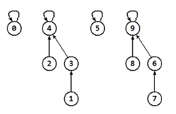
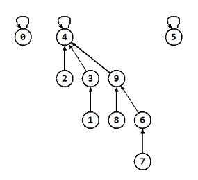

11. Ďalšie algoritmy na grafoch¶
Reprezentácie grafov
Už poznáme väčšie množstvo rôznych reprezentácií. Tu sa pozrieme na konkrétne štyri:
zoznam hrán (edge list)
všetky hrany sú sústredené do jedného zoznamu (môže byť aj spájaný zoznam) pričom nie sú usporiadané v žiadnom poradí
v tomto zozname sú buď priamo dvojice (usporiadané alebo neusporiadané) vrcholov alebo hrán, ktoré sú objektmi s atribútmi začiatok a koniec hrany
ak je graf ohodnotený, tento zoznam pri každej hrane obsahuje aj jej váhu
reprezentácia si ešte pamätá aj zoznam všetkých vrcholov
zoznam susedov (adjacency list)
pre každý vrchol sa udržuje zoznam (môže byť aj spájaný zoznam) všetkých susediacich vrcholov
v neorientovanom grafe sa každá hrana musí nachádzať v oboch zoznamoch pre oba vrcholy
aby boli všetky operácie čo najefektívnejšie, zvykne sa zoznam realizovať dvojsmerným spájaným zoznamom: vyhodenie konkrétnej hrany (
odstran_hranu()) má potom časovú zložitosť O(1), inak bude mať táto operácia zložitosť O(d)
asociatívne pole susedov (adjacency map)
veľmi podobná realizácia zoznamu susedov: namiesto zoznamu použijeme asociatívne pole
vďaka tomu má operácia vyhľadania hrany (
je_hrana()) zložitosť len O(1)zrejme kľúčom v týchto asociatívnych poliach susedov bude druhý vrchol, tento by ale mal byť hashovateľný
matica susedností (adjacency matrix)
každý riadok matice (i-ty) obsahuje informácie o susedoch i-teho vrcholu, teda j-ty stĺpec označuje hranu medzi i-tym a j-tym vrcholom, napríklad hodnoty
False/Truealebo0/1označujú: neexistuje hrana/hrana existuje, resp. pre ohodnotené grafy priamo táto matica označuje váhu konkrétnej hrany (resp. nejaká hodnota označuje neexistenciu hrany, napríkladNone)pre riedke grafy, v ktorých má každý vrchol malý počet hrán (susedov) je toto veľmi neefektívna reprezentácia, lebo väčšina matice (možno 90%) obsahuje informáciu o neexistencii príslušnej hrany
zrejme matica pre neorientovaný graf je symetrická
Ak by sme definovali abstraktnú triedu graf pravdepodobne by obsahovala tieto metódy:
metóda |
graf1 |
graf2 |
graf3 |
graf4 |
|
|---|---|---|---|---|---|
|
O(1) |
O(1) |
O(1) |
O(1) |
|
|
O(1) |
O(n) |
O(n) |
O(n**2) |
|
|
O(n) |
O(n) |
O(n) |
O(n) |
|
|
O(m) |
O(m) |
O(m) |
O(n**2) |
|
|
O(m) |
O(d) |
O(1) |
O(1) |
|
|
O(m) |
O(1) |
O(1) |
O(n) |
|
|
O(m) |
O(d) |
O(d) |
O(n) |
všetky susediace vrcholy |
|
O(1) |
O(1) |
O(1) |
O(n**2) |
|
|
O(m) |
O(d) |
O(d) |
O(n**2) |
|
|
O(1) |
O(1) |
O(1) |
O(1) |
|
|
O(1) |
O(1) |
O(1) |
O(1) |
|
pamäť |
O(n+m) |
O(n+m) |
O(n+m) |
O(n**2) |
V tejto tabuľke je okrem zložitostí operácií pre tieto 4 reprezentácie aj ich pamäťová zložitosť. Jednotlivé premenné tu majú tento význam:
n počet vrcholov
m počet hrán
d stupeň vrcholu (pre riedke grafy sa blíži k O(1), pre husté k O(n))
Algoritmy prehľadávania grafu
Už sme sa zoznámili s týmito troma základnými algoritmami:
prehľadávanie do hĺbky (depth-first search - DFS)
prehľadávanie do šírky (breadth-first search - BFS)
prehľadávanie do hĺbky s návratom (backtracking)
Prehľadávanie do hĺbky
pseudokód:
def prehladavanie(v1):
označ ako navštívený(v1)
for v2 in susediace_vrcholy(v1):
if v2 je ešte nenavštívený:
rekurzívne volaj prehladavanie(v2)
alebo:
def prehladavanie(v1):
for v2 in susediace_vrcholy(v1):
if v2 je ešte nenavštívený:
označ ako navštívená hrana z v1 do v2
rekurzívne volaj prehladavanie(v2)
Zložitosť algoritmu lineárne závisí od počtu vrcholov a počtu hrán, t.j. O(m + n)
Algoritmus sa využije hlavne na zisťovanie:
počtu komponentov, všetkých komponentov, maximálneho komponentu
či je graf súvislý
či sú dva vrcholy v tom istom komponente
nájdenie ľubovoľnej cesty medzi dvoma vrcholmi
Prehľadávanie do šírky
pseudokód:
def prehladavanie(v1):
queue = [v1]
while queue:
v1 = queue.pop(0)
if v1 je ešte nenavštívený:
označ ako navštívený(v1)
for v2 in susediace_vrcholy(v1):
if v2 je ešte nenavštívený:
queue.append(v2)
alebo:
def prehladavanie(v1):
uroven = [v1]
while uroven:
dalsia_uroven = []
for v1 in uroven:
if v1 je ešte nenavštívený:
označ ako navštívený(v1)
for v2 in susediace_vrcholy(v1):
if v2 je ešte nenavštívený:
dalsia_uroven.append(v2)
uroven = dalsia_uroven
Zložitosť algoritmu lineárne závisí od počtu vrcholov a počtu hrán, t.j. O(m + n)
Algoritmus sa využije hlavne na zisťovanie:
to isté ako prehľadávanie do hĺbky
vzdialenosť dvoch vrcholov, nájdenie najkratšej cesty medzi dvoma vrcholmi - len pre neohodnotené grafy
Backtracking
Je to hrubá sila - väčšinou O(2**n). Dajú sa riešiť ľubovoľné problémy aj na ohodnotených grafoch.
pseudokód:
def prehladavanie(v1):
označ ako navštívený(v1)
if nájdené riešenie:
spracuj()
else:
for v2 in susediace_vrcholy(v1):
if v2 je ešte nenavštívený:
rekurzívne volaj prehladavanie(v2)
odznač ako navštívený(v1)
Dijkstrov algoritmus¶
Základný algoritmus hľadania najkratšej cesty v ohodnotenom grafe. Zložitosť algoritmu je O(n**2) (závisí od efektívnosti prioritného frontu). Všimnite si, že sa veľmi podobá na algoritmus do šírky, len si pritom zisťuje najkratšie cesty k navštíveným vrcholom. Pseudokód:
def prehladavanie(v1):
# v zozname D sú momentálne vzdialenosti od v1
D[všetky vrcholy] = inf # nekonečno
D[v1] = 0
queue = prioritný front všetkých vrcholov podľa kľúčov D
spracovane = set()
while queue:
v1 = queue.remove_min()
pridaj v1 k spracovanym
for v in susediace_vrcholy(v1):
if v este nespracovany: # ešte je vo fronte
if D[v1] + vaha(v1, v) < D[v]:
D[v] = D[v1] + vaha(v1, v)
zmeň kľúč D[v] v queue pre vrchol v
return D # zoznam vzdialeností všetkých vrcholov od v1
Tento algoritmus nenájde konkrétnu najkratšiu cestu, ale zostaví zoznam D najkratších vzdialeností (súčet váh) od konkrétneho štartového vrcholu v1. Z tohto zoznamu sa ale veľmi jednoducho dá zostaviť najkratšia cesta zo štartu v1 do ľubovoľného iného vrcholu v2:
cesta = [v2]
while v1 != v2:
for v in susediace_vrcholy(v2):
if D[v] + vaha(v, v2) == D[v2]:
break
v2 = v
cesta.insert(0, v2)
Dijkstrov algoritmus by si mohol pre každý vrchol niekde pamätať svojho predchodcu, t.j. vrchol, z ktorého sa ku nemu prišlo. Trochu by to zjednodušilo konštruovanie cesty.
Pozrime si priebeh algoritmu na tomto jednoduchom grafe:
{kind=link}

Na začiatku algoritmu prioritný front vyzerá takto:
queue = (0, 'A') (∞, 'B') (∞, 'C') (∞, 'D') (∞, 'E') (∞, 'F') (∞, 'G')
minimálmu hodnotu má vrchol 'A', z frontu túto dvojicu vyhodíme (remove_min()) a jeho susedom ('B' a 'C') vypočítame hodnoty D a zaradíme ich do frontu:
queue = (2, 'C') (3, 'B') (∞, 'D') (∞, 'E') (∞, 'F') (∞, 'G')
teraz má minimálnu hodnotu vrchol 'C' (vyhodíme ho z frontu) a vypočítame nové hodnoty pre susedov 'D' a 'F':
queue = (3, 'B') (5, 'D') (10, 'F') (∞, 'E') (∞, 'G')
minimálna hodnota je 'B', vypočítame susedov 'E' a 'D' ('D' sme opravili hodnotu z 5 na 4):
queue = (4, 'D') (6, 'E') (10, 'F') (∞, 'G')
minimálna hodnota je 'D', vypočítame susedov 'E' a 'F':
queue = (6, 'E') (9, 'F') (∞, 'G')
minimálna hodnota je 'E', vypočítame susedov 'F' a 'G':
queue = (9, 'F') (10, 'G')
minimálna hodnota je 'F', vypočítame suseda 'G':
queue = (10, 'G')
vrchol 'G' už nemá nespracovaných susedov, takže algoritmus končí.
V zozname D, v ktorom sme počítali vzialenosti od vrcholu 'A', je postupne pre každý vrchol:
D = ('A', 0) ('B', 3) ('C', 2) ('D', 4) ('E', 6) ('F', 9) ('G', 10)
Vzdialenosť z 'A' do 'G' je 10. Keď teraz spustíme vykreslenie cesty, dostávame:
{kind=link}

Túto istú tabuľku by sme vedeli využiť, napríklad, aj pre najkratšiu cestu do 'F':
{kind=link}

Union-Find problém¶
motivácia:
tajná služba sa snaží odhaliť identitu agentov
každý agent má niekoľko svojich mien (zrejme pre každé má aj svoj pas)
tajná služba by chcela mať systém, pomocou ktorého by vedela rýchlo zistiť, či dve rôzne mená patria jednému agentovi (napríklad
'James Bond'a'007')zrejme takýto systém sa dá reprezentovať ako graf, v ktorom vrcholmi sú rôzne mená agentov a hranami vyjadrujeme, že dve mená patria jednému agentovi
V takomto systéme práve komponenty grafu vyjadrujú vzťah medzi agentom a jeho rôznymi menami. Takže tajná služba chce rýchlo vedieť zistiť, či sa dve mená nachádzajú v tom istom komponente.
Už vieme zostaviť jednoduché algoritmy, ktoré pomocou prehľadávania do_hĺbky alebo do_šírky zostroja množiny vrcholov pre jednotlivé komponenty. Najväčší problém ale nastáva, keď sa tajná služba dozvie nový vzťah medzi dvoma menami (novú hranu grafu) a bude treba znovu prepočítať všetky komponenty, pritom by možno stačilo s existujúcimi komponentmi niečo urobiť. (Hoci, ak to potrebujeme zistiť len raz na začiatku bez ďalších pridávaní hrán, algoritmus do_hĺbky/do_šírky je dostatočne efektívny.)
Tento problém sa nazýva union-find, resp. sústava disjunktných množín (disjoint set):
máme niekoľko disjunktných množín
chceme vedieť rýchlo nájsť, v ktorej množine sa nachádza nejaký prvok (v ktorom komponente sa nachádza nejaký vrchol): operácia find
a tiež chceme raz začas dve množiny spojiť do jednej (pridali sme novú hranu, musíme spojiť dva komponenty do jedného): operácia union
Ako reprezentovať takúto dátovú štruktúru (zrejme ju bude využívať, napríklad, náš graf mien agentov), aby tieto operácie boli čo najefektívnejšie. Tieto disjunktné množiny by ste nemali pliesť so štandardným pythonovským typom set, preto sa niekedy používa aj terminológia disjunktné skupiny (group).
Aby sme vedeli manipulovať s takýmito množinami, každá bude mať svojho reprezentanta (jeden konkrétny prvok zo skupiny) - niekedy sa mu hovorí aj líder (leader).
Základné operácie tejto dátovej štruktúry:
make_set(x)- vytvorí novú jednoprvkovú množinu pre objektxzrejme samotný prvok je aj reprezentantom tejto množiny
union(p, q)- spojí dve množiny, ktoré obsahujú dané dva prvky, do jednejväčšinou sa reprezentant jednej z týchto množín stáva reprezentantom aj ich zjednotenia
find(p)- vráti reprezentanta množiny, v ktorej sa daný prvok nachádza
Triviálne riešenie¶
Predpokladajme, že každý prvok má informáciu o reprezentantovi množiny, do ktorej patrí. Napríklad, ak sme mali graf definovaný ako zoznam vrcholov:
class Vrchol:
def __init__(self, data):
self.data = data
self.rep = self # reprezentant
class Graf:
def __init__(self):
self.vrcholy = []
...
Pri vytvorení vrcholu sme mu automaticky pridelili reprezentanta (samého seba). Operácia find(p) potom vráti túto hodnotu. Zložitosť tejto operácie je O(1). Operácia union(p, q) najprv zistí reprezentantov oboch prvkov (pomocou find()) a ak sú rôzni, bude treba všetky výskyty druhého reprezentanta v zozname všetkých prvkov (self.vrcholy) zmeniť na hodnoty prvého reprezentanta, teda schematicky:
def union(p, q):
r1 = find(p)
r2 = find(q)
if r1 != r2:
for v in self.vrcholy:
if v.rep == r2:
v.rep = r1
Zrejme zložitosť tejto operácie je O(n) pre n počet prvkov (napríklad, vrcholov grafu).
Vo všeobecnosti toto riešenie znamená pomocnú tabuľku veľkosti n, v ktorej i-ty prvok tabuľky zodpovedá reprezentantovi i-teho prvku. Operácia find() iba siahne do tabuľky na príslušné miesto (teda O(1)) a operácia union() bude možno musieť prejsť celú tabuľku a niektorým prvkom zmeniť hodnotu (zložitosť je teda O(n)).
Ak by sme zapísali túto reprezentáciu do tabuľky (do zoznamu), v ktorej i-ty prvok označuje reprezentanta, tak pre izolované vrcholy tabuľka vyzerá takto:
0 |
1 |
2 |
3 |
4 |
5 |
6 |
7 |
8 |
9 |
|
0 |
1 |
2 |
3 |
4 |
5 |
6 |
7 |
8 |
9 |
Každý prvok je sám pre seba reprezentantom. Ak budeme teraz zjednocovať niektoré množiny, začnú sa prerábať reprezentanti pre jednotlivé prvky, napríklad, po operácii union(1, 3) všetky prvky s reprezentantom 3 sa prerobia na 1:
0 |
1 |
2 |
3 |
4 |
5 |
6 |
7 |
8 |
9 |
|
0 |
1 |
2 |
1 |
4 |
5 |
6 |
7 |
8 |
9 |
Momentálne máme už len 9 disjunktných množín, pričom jedna z nich má 2 prvky.
Po ďalších niekoľkých volaniach: union(2, 4), union(7, 6), union(8, 9):
0 |
1 |
2 |
3 |
4 |
5 |
6 |
7 |
8 |
9 |
|
0 |
1 |
2 |
1 |
2 |
5 |
7 |
7 |
8 |
8 |
Teraz máme už len 6 množín: dve sú 1 prvkové a štyri dvojprvkové.
Ďalšie dve volania union(3, 4), union(7, 8) zlúčia ďalšie množiny:
0 |
1 |
2 |
3 |
4 |
5 |
6 |
7 |
8 |
9 |
|
0 |
1 |
1 |
1 |
1 |
5 |
7 |
7 |
7 |
7 |
Prvé volanie union(3, 4) najprv zistilo reprezentantov prvkov 3 a 4, to sú hodnoty 1 a 2 a preto prvky s hodnotami 2 sa nahradili 1.
Ďalšie volanie union(6, 4) zlúči množiny s reprezentantmi 7 (pre prvok 6) a 1 (pre prvok 4), teda nahradia 1 hodnotami 7, vznikne tým jedna 8 prvková množina. Ak by sme ešte zavolali union(1, 9), neudeje sa nič, lebo oba prvky majú teraz rovnakého reprezentanta:
0 |
1 |
2 |
3 |
4 |
5 |
6 |
7 |
8 |
9 |
|
0 |
7 |
7 |
7 |
7 |
5 |
7 |
7 |
7 |
7 |
Vidíme, že tu teraz máme 3 disjunktné množiny a vieme veľmi rýchlo zistiť, či sa ľubovoľné dva prvky x a y nachádzajú v tej istej množine: stačí otestovať
tab[x] == tab[y]
Zrejme operácia union() tu má časovú zložitosť O(n), keďže kvôli prečíslovaniu reprezentantov, musíme prejsť celú tabuľku. Ak by sme volali union() len pre prvky, ktoré sú v rôznych množinách, tak po n-1 volaniach by sme dostali jedinú množinu, ktorá by obsahovala všetky prvky.
Riešenie so spájanými zoznamami¶
Aby sme v predchádzajúcom tabuľkovom riešení nemuseli pri union() zakaždým prechádzať celý zoznam, pre každý komponent si vytvoríme spájaný zoznam tých prvkov, ktoré do neho patria. Okrem toho si uložíme aj veľkosť tohto komponentu. Operácia union() bude teraz prechádzať a modifikovať len prvky menšieho komponentu. Potom ešte tieto dva spájané zoznamy zreťazí a nastaví si novú veľkosť komponentu.
V najhoršom prípade je operácia union() opäť O(n), ale pre každý prvok platí, že jeho hodnota reprezentanta sa zmení iba vtedy, keď sa nachádza v menšom (alebo rovnako veľkom) komponente. Lenže toto sa môže stať maximálne log n krát, preto n operácií union() bude trvať O(n log n) a preto priemerná zložitosť jednej operácie union() je O(log n).
V našom príklade s komponentmi grafu, by sme to mohli zapísať:
class Vrchol:
def __init__(self, data):
self.data = data
self.rep = self # reprezentant
self.next = None # nasledovník v komponente
self.size = 1 # počet prvkov v komponente
class Graf:
def __init__(self):
self.vrcholy = []
...
Asi bude najvhodnejšie, keď reprezentantom bude prvý prvok komponentu, teda spájaného zoznamu. Potom schematicky:
def union(p, q):
r1 = find(p)
r2 = find(q)
if r1 != r2:
if r1.size < r2.size:
# všetkým prvkom v zozname r1 zmen reprezentanta na r2
p = last = r1
while p is not None:
p.rep = r2
last, p = p, p.next
# zreťaz oba zoznamy
last.next = r2.next
r2.next = r1
# zvýš počet
r2.size += r1.size
else:
# všetkým prvkom v zozname r2 zmen reprezentanta na r1
...
# zreťaz oba zoznamy
...
# zvýš počet
...
Riešenie stromami¶
Predchádzajúce riešenie pomocou spájaných zoznamov ešte trochu vylepšíme. Aby sme nemuseli pri operácii union() prechádzať veľkú časť prvkov (všetky v nejakom komponente), nebudeme z nich vytvárať spájané zoznamy, ale orientované stromy: každý prvok si bude namiesto nasledovníka (next) pamätať svojho rodiča v strome (teda parent), pričom koreň bude obsahovať referenciu na samého seba. Každý prvok sa teda nachádza v nejakom strome (komponent, teda disjunktná množina), pričom do koreňa (to bude reprezentantom množiny) sa vieme dostať veľmi jednoducho sledovaním smerníka parent.
Aby sa nám čo najlepšie robila operácia union() (budeme zlučovať dva stromy do jedného), pre každý komponent si budeme uchovávať (atribút rank) aj jeho výšku (najdlhšia cesta smerom k listom). Pri inicializácii nastavíme parent na seba samého (self) a rank na 0:
class Vrchol:
def __init__(self, data):
self.data = data
self.parent = self # predchodca v strome
self.rank = 0 # výška stromu
class Graf:
def __init__(self):
self.vrcholy = []
...
Operácia find() schematicky:
def find(p):
while p != p.parent:
p = p.parent
return p
Takto sa dostane do koreňa stromu, čo je reprezentantom celej množiny (komponentu). Operácia union() zistí, ktorý z komponentov má menší rank (výšku stromu) a ten potom pripojí ako ďalšieho syna ku koreňu väčšieho stromu. Keďže výška nového stromu sa pritom nezmení, netreba meniť ani hodnotu rank. Ak mali oba stromy rovnaký rank, tak pripojením jedného stromu ako syna k druhému sa o 1 zväčší jeho rank. Schematicky zapíšeme:
def union(p, q):
r1 = find(p)
r2 = find(q)
if r1 != r2:
if r1.rank > r2.rank:
r2.parent = r1
else:
r1.parent = r2
if r1.rank == r2.rank:
r2.rank += 1
Časová zložitosť operácie find(p) závisí od výšky stromu, ktorý sa takto prechádza, čo je rank reprezentanta, teda koreňa stromu. Operácia union() urobí najprv 2 volania find() a potom len príkazy O(1). Teda obe operácia union() aj find() majú rovnakú zložitosť. Keďže strom výšky k mohol vzniknúť len spojením (union()) dvoch stromov výšky k-1, každý strom s koreňom rank rovný k má aspoň 2**k prvkov a preto takýto strom s n vrcholmi má výšku (rank) maximálne log n. Teda zložitosť oboch operácií je O(log n).
Existujú ešte ďalšie verzie a vylepšenia tejto dátovej štruktúry, my sa nimi v tomto predmete zaoberať nebudeme.
Príklad, ktorý sme robili pri tabuľkovej reprezentácii disjunktných množín, môžeme zopakovať aj pre stromčeky. Začnime s 10 jednoprvkovými množinami:
{kind=link}

Najprv spojíme union(1, 3):
{kind=link}

Teraz postupne union(2, 4), union(7, 6), union(8, 9):
{kind=link}

Potom union(3, 4), union(7, 8):
{kind=link}

Na záver union(6, 4), union(1, 9):
{kind=link}

Iné využitie union-find¶
Dátová štruktúra disjoint set sa používa nielen na udržiavanie množín vrcholov jednotlivých komponentov grafu, ale má využitie, napríklad pre
zisťovanie, či je v grafe cyklus:
postupne konštruujeme najprv z jednoprvkových množín (pre každý vrchol jedna), skladáme väčšie (prechádzame všetky hrany a pre každú spojíme dve zodpovedajúce množiny)
ak zistíme, že oba vrcholy danej hrany sa už nachádzajú v jednom komponente, znamená to, že v grafe je cyklus
vytváranie minimálnej kostry grafu pomocou Kruskalovho algoritmu (budeme vytvárať takú množinu hrán, ktorých súčet ohodnotení je minimálny):
každý vrchol grafu vytvoríme ako samostatnú množinu (
make_set(v))vytvoríme prioritný front všetkých hrán, pričom kľúčmi budú ohodnotenia hrán (váhy)
kým vo výslednej množine nie je n-1 hrán, opakuje:
vyberie z prioritného frontu hranu s najmenšou váhou (
remove_min()) -> (v1, v2)ak tieto vrcholy ešte nie sú v tej istej disjunktnej množine (teda
find(v1)!=find(v2)), tak ich zjednotí pomocouunion(v1, v2)a pridaj do výslednej množiny hrán
výsledná množina hrán je hľadaná minimálna kostra grafu
Cvičenie¶
Poznámka
riešenia úloh ulož do jedného súboru a odovzdaj na úlohový server https://vektor.fmph.uniba.sk/
testovací server tieto ulohy nebude testovať, vyrieš a odovzdaj ich všetky
prvé tri riadky súboru s riešením musia obsahovať:
# 11. cvicenie # student: Janko Hrasko # datum: 5.5.2026
zrejme ako študenta uvedieš svoje meno
Trieda Graf
Toto je verzia triedy Graf, ktorá je vychádza z kódu z predchádzajúcej prednášky o backtrackingu na grafoch. Využi tento kód pri prvých úlohách cvičenia:
import tkinter
import random
class Graf:
canvas = tkinter.Canvas(bg='white', width=620, height=620)
canvas.pack()
class Vrchol:
def __init__(self, x, y, meno):
self.sus = {}
self.xy, self.meno = (x, y), meno
def pridaj_hranu(self, v2, vaha):
self.sus[v2] = vaha
def kresli(self):
x, y = self.xy
self.id = self.canvas.create_oval(x-15, y-15, x+15, y+15, fill='gray', outline='')
self.canvas.create_text(x, y, fill='yellow', text=self.meno)
def zafarbi(self, farba):
self.canvas.itemconfig(self.id, fill=farba)
#-----------------------
def __init__(self, n):
self.Vrchol.canvas = self.canvas
self.vrcholy = []
dd = (min(600, 600)-60) // (n-1) # mierka
for i in range(n):
for j in range(n):
x1, y1 = dd*j+20, dd*i+20
v1 = self.pridaj_vrchol(x1, y1)
if j > 0:
x2, y2 = self.vrcholy[v2 := v1-1].xy
vaha = random.randint(1, 5)
self.pridaj_hranu(v1, v2, vaha)
if i > 0:
x2, y2 = self.vrcholy[v2 := v1-n].xy
vaha = random.randint(1, 5)
self.pridaj_hranu(v1, v2, vaha)
self.id = {}
for i in range(len(self.vrcholy)):
for j in self.vrcholy[i].sus:
if i < j:
self.kresli_hranu(i, j)
for vrchol in self.vrcholy:
vrchol.kresli()
self.canvas.bind('<Button-1>', self.udalost_klik)
self.klik = []
def pridaj_vrchol(self, x, y):
meno = len(self.vrcholy)
self.vrcholy.append(self.Vrchol(x, y, meno))
return meno
def pridaj_hranu(self, i, j, vaha):
self.vrcholy[i].pridaj_hranu(j, vaha)
self.vrcholy[j].pridaj_hranu(i, vaha)
def je_hrana(self, i, j):
return j in self.vrcholy[i].sus
def kresli_hranu(self, i, j):
(x1, y1), (x2, y2) = self.vrcholy[i].xy, self.vrcholy[j].xy
self.id[i, j] = self.id[j, i] = \
self.canvas.create_line(x1, y1, x2, y2, fill='lightgray', width=5)
self.canvas.create_text((x1+x2)/2, (y1+y2)/2, text=self.vrcholy[i].sus[j],
fill='red', font='arial 12 bold')
def zafarbi_hranu(self, i, j, farba='lightgray'):
self.canvas.itemconfig(self.id[i, j], fill=farba)
def udalost_klik(self, event):
for vrchol in self.vrcholy:
x, y = vrchol.xy
if (x-event.x)**2 + (y-event.y)**2 < 15**2:
vrchol.zafarbi('blue')
self.canvas.update()
self.klik.append(vrchol.meno)
if len(self.klik) == 1:
self.d = self.dijkstra(self.klik[0])
print(f'{self.d = }')
else:
self.cesta(self.klik[0], self.klik[-1], self.d)
return
def dijkstra(self, v1):
visited = set()
inf = float('inf') # nekonečno
...
def cesta(self, v1, v2, d):
...
graf = Graf(4)
Dijkstrov algoritmus
Do triedy
Grafdoprogramuj dijkstrov algoritmus z prednášky (metódudijkstra(v1)), ktorá vráti zoznam vzdialenostídod štartového vrcholuv1do všetkých ďalších.môžeš použiť premennú
inf(s hodnotoufloat('inf')), ktorá v Pythone reprezentuje nekonečno - vyskúšaj jednoduchú aritmetiku s touto hodnotou (porovnanie čísla sinf, pripočítanie/odpočítanie odinf, …)prioritný front vrcholov nemusíš programovať ako optimálnu dátovú štruktúru - stačí použiť obyčajný zoznam dvojíc
(d[vrchol], vrchol), ktorý buď budeš udržiavať utriedený, alebo v ňom zakaždým budeš hľadať minimálny prvokvyskúšaj spustiť túto metódu s rôznymi štartovými vrcholmi a výsledky skontroluj
Do triedy
Grafdoprogramuj metóducesta(v1, v2, d), ktorá pre zoznam vzdialenostídz dijkstrovho algoritmu dokáže zrekonštruovať cestu od štartuv1do cieľav2.ak máš daný aktuálny zoznam
d, môžeš začať odkonca: pre cieľový vrchol nájdeš jeho predchodcu na trase (je to vrchol, ktorého vzdialenosť od štartu sa líši od cieľového presne o hodnotu na hrane)metóda by mala túto cestu vykresliť (metóda
zafarbi_hranu()prefarbí konkrétnu hranu grafu)metódu otestuj aj pre väčší graf, napríklad
graf = Graf(7)
Preprogramuj metódu
dijsktra(v1, v2)tak, aby namiesto lokálnej premennejdso zoznamom vzdialeností odv1, sa použil atribútdv každom vrchole grafu (v podtriedeVrchol). Podobne, namiesto lokálnej premennejvisited, v ktorej sa asi evidovali už spracované vrcholy, do každého vrcholu vlož atribútvis, v ktorom sa bude uchovávaťTruealeboFalse. Algoritmusdijkstranebude používať ani žiadny prioritný front (ani pomocný zoznam), ale bude prechádzať všetky vrcholy a kontrolovať atribútydavis. Táto metóda na koniec vykreslí nájdenú najkratšiu cestu do vrcholuv2(namiesto metódycesta).
Union-find
Postupne ručne odtrasuj všetky 3 reprezentácie operácií
union()afind()(podobne, ako je to ukázané v prednáške) na 12 prvkovom zozname celočíselných hodnôtrange(12)a volanímunion()pre dvojice(0, 11), (1, 10), (2, 9), (3, 8), (4, 7)
(0, 7), (8, 1), (5, 9), (2, 6)
(11, 3), (2, 4)
Riešenie tejto úlohy nemusíš odovzdávať.
Operácie
union()afind()realizuj stromčekovou reprezentáciou z prednášky, v ktorej si každý vrchol pamätá svojrank. Skontroluj na údajoch z úlohy (4). Definuj:def find(p): ... def union(p, q): ...
Uprav reprezentáciu stromčekmi z úlohy (5) tak, že sa pritom nepoužije
rank(t.j. bezrank: rozhoduje sa náhodne s pravdepodobnosťou1/2). Otestuj podobne ako v úlohe (5). Definuj:def find(p): ... def union(p, q): ...
Zapíš funkciu, ktorá pomocou realizácie z (5) zistí počet disjunktných množín (komponentov grafu) len na základe informácií v tejto reprezentácií.
pravdepodobne budeš prechádzať zoznam prvkov a nejako si pri tom budeš evidovať rôzne množiny
11. Týždenný projekt¶
Poznámka
riešenie úlohy ulož do textového súboru s príponou
.pya odovzdaj na testovací server https://vektor.fmph.uniba.sk/prvé tri riadky súboru s riešením musia obsahovať:
# 11. tyzdenny projekt # student: Janko Hraško # datum: 21.5.2026
zrejme ako študenta uvedieš svoje meno, dátum uprav podľa dátumu odovzdania
nepoužívaj
importaniglobal
Dijkstrov algoritmus pre graf pomocou zoznamu hrán
Naprogramuj metódy triedy Graph (neorientovaný ohodnotený graf) pre reprezentáciu pomocou zoznamu hrán:
inf = float('inf')
class Vertex:
def __init__(self, name):
self.name = name
self.d = None
class Edge:
def __init__(self, start, end, weight): # start a end sú typu Vertex
self.start = start
self.end = end
self.weight = weight
class Graph:
def __init__(self, filename):
self.vertices = []
self.edges = []
...
def get_vertex(self, name):
return ...
def insert_edge(self, name1, name2, weight):
...
def incident_edges(self, vertex):
...
def dijkstra(self, vertex):
...
def get_path(self, vertex1, vertex2):
return
Dátová štruktúra Graph bude využívať triedy Vertex (pre vrcholy) a Edge (pre hrany). Atribút vertices bude obsahovať zoznam všetkých vrcholov grafu (inštancie Vertex), atribút edges bude obsahovať všetky hrany grafu (inštancie Edge), keďže graf je neorientovaný, každá hrana bude v tomto zozname dvakrát (pre oba smery). Nepoužívaj žiadne ďalšie atribúty.
Metóda
__init__prečíta textový súbor a vytvorí z neho neorientovaný graf. Každý riadok súboru popisuje jednu hranu: mená dvoch vrcholov a celočíselnú váhu (hodnotu na hrane)get_vertexvráti inštanciuVertex: ak už existuje vrchol s týmto menom v zoznameverticesvráti tento objekt, inak vyrobí nový a pridá ho do zoznamuverticesinsert_edgevloží doedgesnovú hranu - vloží oba smery (parametrami sú dva reťazce a celé číslo)incident_edgesvráti generátor so všetkými hranami (inštancieEdge), ktoré vychádzajú z daného vrcholu (typuVertex)
Teraz doprogramuj dijkstrov algoritmus z prednášky (metódu dijkstra(vertex) s parametrom typu Vertex),pritom
namiesto zoznamu
Ds vypočítanými vzdialenosťami použi atribútdv každom vrcholeprioritný front vrcholov nemusíš programovať ako optimálnu dátovú štruktúru - stačí použiť obyčajný zoznam dvojíc
(d[vrchol], vrchol), ktorý bude treba udržiavať utriedenýmetóda nebude vracať žiadnu hodnotu
Ďalej doprogramuj metódu get_path(vertex1, vertex2), ktorá pre vypočítané vzdialeností (atribút d vo vrcholoch) z dijkstrovho algoritmu dokáže zrekonštruovať cestu od štartu vertex1 do cieľa vertex2:
začni od konca: pre cieľový vrchol nájdi jeho predchodcu na trase (je to vrchol, ktorého vzdialenosť od štartu sa líši od cieľového presne o hodnotu na hrane)
metóda by mala túto cestu vrátiť ako postupnosť (
list) vrcholov (inštanciíVertex), alebo vrátiNone, ak cesta neexistuje
Do triedy Graph môžeš pridať ďalšie pomocné metódy. Triedy Vertex a Edge nemeň.
Napríklad, pre subor1.txt:
7 8 6
0 3 3
1 2 6
4 7 1
4 5 1
6 7 1
3 6 2
2 5 6
3 4 5
1 4 6
5 8 1
0 1 5
svoj program môžeš testovať, napríklad takto:
if __name__ == '__main__':
g = Graph('subor1.txt')
v1 = g.get_vertex('0')
g.dijkstra(v1)
path = g.get_path(v1, g.get_vertex('8'))
print(*(v.name for v in path))
path = g.get_path(v1, g.get_vertex('5'))
print(*(v.name for v in path))
Výpis potom bude:
0 3 6 7 4 5 8
0 3 6 7 4 5
Môžeš si stiahnuť 2tp11.zip s testovacími súbormi 'subor1.txt', 'subor2.txt', 'subor3.txt', …, ktoré bude používať testovač.